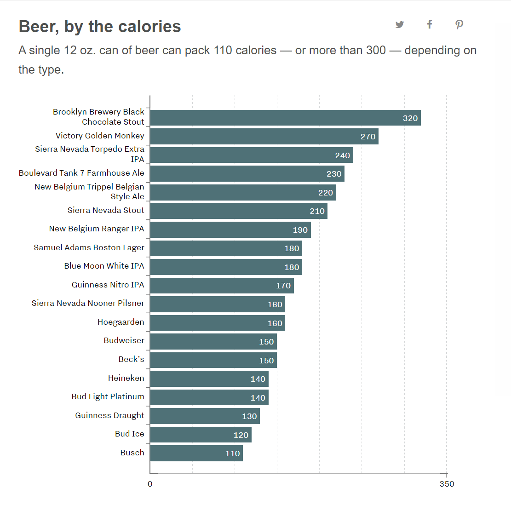

Black Hat Visualization
link: https://www.vox.com/2016/7/25/12251286/calories-alcoholic-drinks-chart
This visualization from Vox about Beer calories is misleading mainly
because of the lack of proper tick marks for the x axis. This means the reader
isn't able to contextualize the bars.
For instance, the reader isn't able to accurately tell where the half-way
point is for the x axis values.
This also leads to the reader to inaccurately read each bar because
the lack of tick marks in the x axis means the reader interprets
the calorie count purely on the numbers inside the bars.
The lack of sufficient tick marks makes the size aspect of the bars
kind of useless since the reader can't associate the position of the ends of the
bars with a tick mark.
In addition, while this graph visualizes only calories, the lack of other factors that
can affect the amount of calories a beer has are not present.
Vox purposefully left out important pieces of the dataset which are the alcohol percentage
and amount of carbs. These are aspects of beer that can affect the amount of calories.
White Hat Visualization
As is evident, there is a lot more data in the most recent version of the dataset compared to the one
that Vox used.
In this redesigned version of Vox's graph, I have included the missing data components which were the alcohol percentage and
amount of carbs.
I have also used a categorical scale to help distinguish between the 3 types of categorical data.
In terms of sorting, I have sorted the data by amount of calories since that was the original goal.
The alcohol percentage and amount of carbs are not sorted and pertain directly to their related beer.
With my redesigned version, it is clear to see how alcohol percentage normally dictates the amount of calories.
However, there are certain beers that have a lower alcohol percentage but have a higher amount of calories.
This important finding cannot be revealed in Vox's graph.